Epidemic Networks
Kelsey Andersen & Karen Garrett
Matricies in R: Epidemic spread over time
First, load the libraries that we will use in this module.
library(igraph)
library(tidyverse)Using the symbol ’*‘in R multiplies each element of a matrix by the corresponding element of another matrix. This is ’element-wise multiplication’, rather than matrix multiplication.
X1 <- matrix(1:9,ncol=3)
X1## [,1] [,2] [,3]
## [1,] 1 4 7
## [2,] 2 5 8
## [3,] 3 6 9X2 <- matrix(21:29,ncol=3)
X2## [,1] [,2] [,3]
## [1,] 21 24 27
## [2,] 22 25 28
## [3,] 23 26 29X1 * X2 ## element wise multiplication## [,1] [,2] [,3]
## [1,] 21 96 189
## [2,] 44 125 224
## [3,] 69 156 261X1 %*% X2 ## Matrix multiplication## [,1] [,2] [,3]
## [1,] 270 306 342
## [2,] 336 381 426
## [3,] 402 456 510Matrix Multiplication
Matrix multipication is a concept from liner algribra that helps us work mathmatically with matricies. Unlike when adding two matricies together, we do not go element-wise when getting the product of matricies. Using matrix multiplication, we can visualize the process by which infections spread through networks over time.
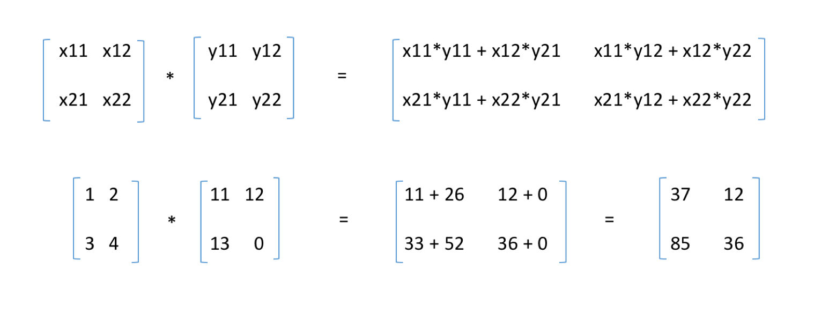
Starting State Vectors
This concept is a method for infection spread over temporal networks. Note that to sucessfully perform matrix multiplication, there needs to be the same number of columns in matrix 1 as there are rows in matrix two. Let’s look at this example. The first matrix is our starting state vector the second is our network adjacency matrix.

V1 <- c(1,0,0) # starting vector of states
M1 <- matrix(c(1,0,0,0,1,0,1,0,0),ncol=3)
M2 <- graph_from_adjacency_matrix(M1)
plot(M2)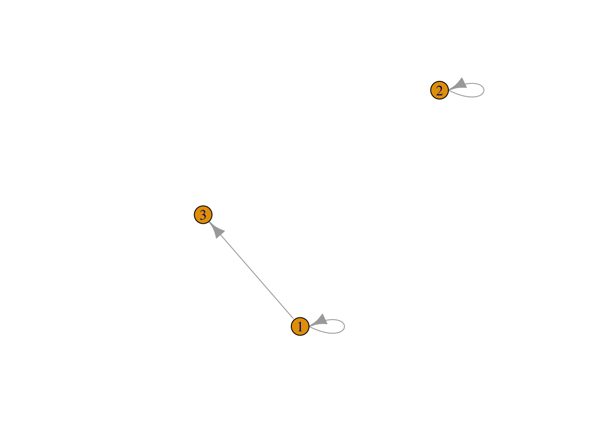
V2 <- V1 %*% M1 ### matrix multiplication
V2## [,1] [,2] [,3]
## [1,] 1 0 1
Matrix multiplication, continued. Consider two matricie:
A <- matrix(1:9,ncol=3)
A## [,1] [,2] [,3]
## [1,] 1 4 7
## [2,] 2 5 8
## [3,] 3 6 9B <- matrix(c(1,1,0,0,0,1,0,1,0),ncol=3)
B## [,1] [,2] [,3]
## [1,] 1 0 0
## [2,] 1 0 1
## [3,] 0 1 0
Element-wise multiplication would produce the following results:
A * B ## [,1] [,2] [,3]
## [1,] 1 0 0
## [2,] 2 0 8
## [3,] 0 6 0
Matrix multiplication would produce the following results:
A %*% B## [,1] [,2] [,3]
## [1,] 5 7 4
## [2,] 7 8 5
## [3,] 9 9 6
Order matters for matrix multiplication!!
B %*% A## [,1] [,2] [,3]
## [1,] 1 4 7
## [2,] 4 10 16
## [3,] 2 5 8
Epidemiological example
Spread over time
Suppose a vector indicates whether each node is infected or not, for the first time point (1=infected, 0=not infected). We call this the “starting state” vector. Again, the starting state vector must be the same size as the number of rows of the network adjacency matrix.
Time1 <- c(1,0,0,0,0,1,1,1,1,0) ## call this vector "Time 1"
length(Time1) ## vector of 10 nodes## [1] 10sum(Time1) ### 5 infected## [1] 5
A simple adjacency matrix indicates whether disease will be transmitted or not in each time step – note that this matrix is generated stochastically so each time you repeat the below code, a slightly different matrix will be formed. This matrix is essentially your network.
Amat <- matrix(runif(100) > 0.7, ncol=10) # 30% chance that a link is formed between any two nodes
Amat <- Amat*1 ## make your logical values 1's a 0's
diag(Amat) <- 1 # set the diagonals to 1 so that if a node is infected, it stays infected
Amat # our randomly generated matrix## [,1] [,2] [,3] [,4] [,5] [,6] [,7] [,8] [,9] [,10]
## [1,] 1 1 0 0 0 0 0 0 0 0
## [2,] 1 1 0 1 0 0 0 0 0 0
## [3,] 0 0 1 0 0 0 1 1 0 0
## [4,] 1 1 0 1 0 1 1 0 1 1
## [5,] 0 0 0 1 1 0 0 1 0 0
## [6,] 0 0 1 0 1 1 0 0 0 1
## [7,] 0 0 1 1 0 0 1 0 1 0
## [8,] 0 0 1 0 0 1 1 1 1 0
## [9,] 0 1 0 0 1 0 1 0 1 0
## [10,] 0 1 0 1 0 0 0 1 0 1
Plot to see you network
Mat3 <- graph_from_adjacency_matrix(Amat)
plot(Mat3, edge.arrow.size = .5)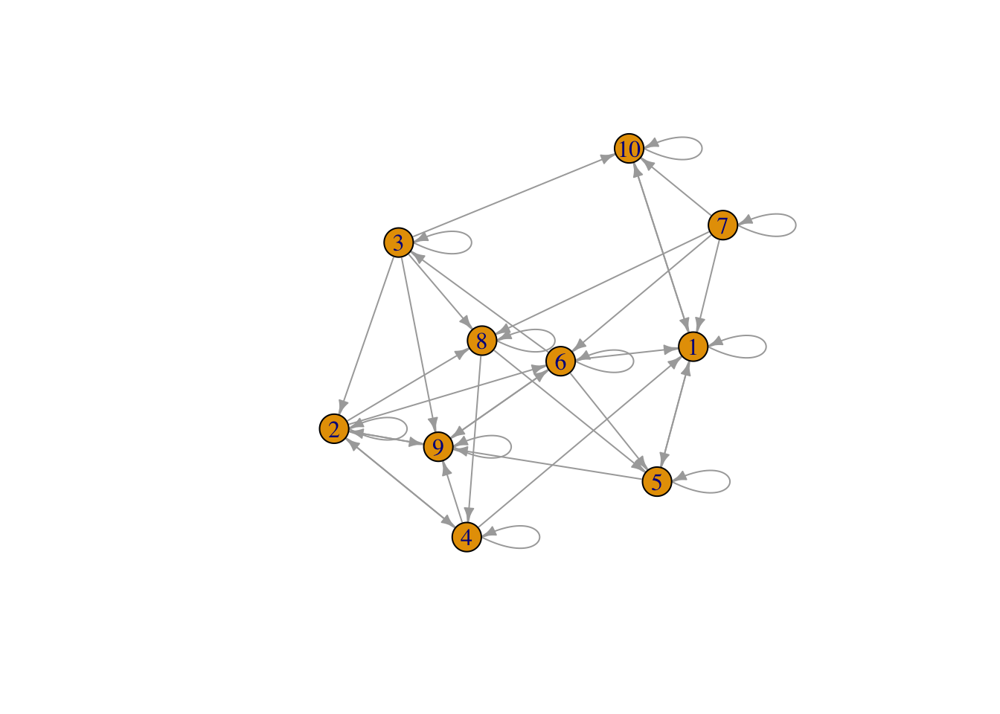
Think about how Mat3 will modify the infection status vector when Time1 is multiplied times Mat3
Matrix multiplication and bind together the new status with the starting state vector. See how many became infected in the second time step.
temp <- Time1 %*% Amat # here values can be greater than 1. Place in temporary object
Time2 <- as.numeric(temp > 0) # Make 0s and 1s again
df <- cbind(Time1,Time2)
df## Time1 Time2
## [1,] 1 1
## [2,] 0 1
## [3,] 0 1
## [4,] 0 1
## [5,] 0 1
## [6,] 1 1
## [7,] 1 1
## [8,] 1 1
## [9,] 1 1
## [10,] 0 1Case Study: sweetpotato in Uganda
This dataset is from Andersen et al 2018 and xxx et al 2017 Some background….
First, let’s read in a simplified node and link file. The node file contains the 27 sellers that were survyed in this dataset and the links file contains the 99 villages to which they sold sweetpotato planting material in 2014.
nodes <- read.csv("nodelist.csv", header=TRUE) #load in node attribute file (see node attributes include color)
links <- read.csv("edgelist.csv", header = TRUE) #load in edge attribute file
links$weight <- as.numeric(links$weight) ### weight is the average volume sold
head(links) # check the first few lines of the link file ## S_ID V_ID weight
## 1 S_1 V_30 3.00
## 2 S_1 V_48 1.75
## 3 S_1 V_58 23.00
## 4 S_1 V_95 1.00
## 5 S_1 V_98 4.75
## 6 S_10 V_30 0.50nrow(links)## [1] 205
Aggregate the edges so we have one edge per pair of nodes (not multiple links between the same nodes)
edges <- aggregate(links$weight,links[,1:2],sum) # aggregate transactions and sum total volume sold
head(edges) #check edges## S_ID V_ID x
## 1 S_2 V_1 27.75
## 2 S_25 V_1 19.50
## 3 S_16 V_10 3.00
## 4 S_17 V_10 2.00
## 5 S_18 V_10 4.00
## 6 S_22 V_10 3.00dim(edges) #check dimensions of edges (now we have aggregated 875 transactions to 205)## [1] 205 3
Make our network!
SweetNet <- graph_from_data_frame(d = edges, vertices = nodes, directed = T) #combine node and link files to create a directed adjaceny matrix
fix.layout <- layout_with_dh(SweetNet) #fix layout so future runs will have the same layout!!
plot(SweetNet, edge.arrow.size=.2, vertex.size=7, vertex.label.cex=.5, vertex.label.color='white', layout= fix.layout) # plot! (node colors are specified in the node attribute file)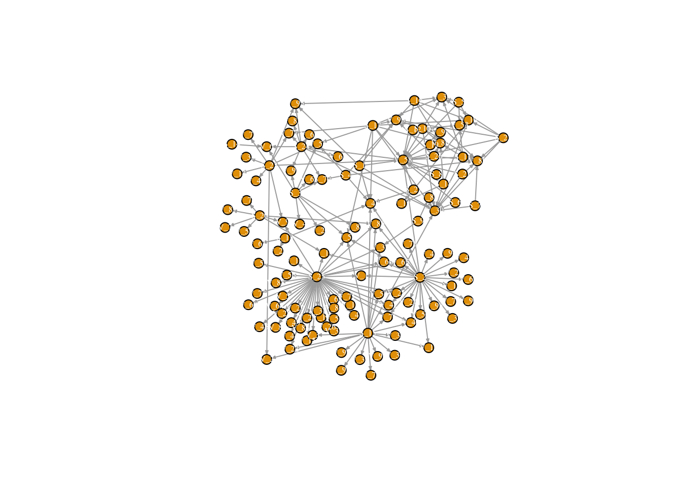 For fun, color nodes by “type”
## still without village to village connections
V(SweetNet)$color <- ifelse(nodes$Type == "Buyer", "dodgerblue2", "seagreen3")
plot(SweetNet, edge.arrow.size=.1, vertex.label.color = "white", vertex.size=6, vertex.label.cex=.6, layout = fix.layout, edge.curved = FALSE, vertex.frame.color=V(SweetNet)$color)
E(SweetNet)$color <- "gray55"
legend(x=-1.4, y=.8, c("Sellers","Villages"), pch=16, col= c("dodgerblue2", "seagreen3"), pt.cex=2, cex= .8, bty="n", ncol=1)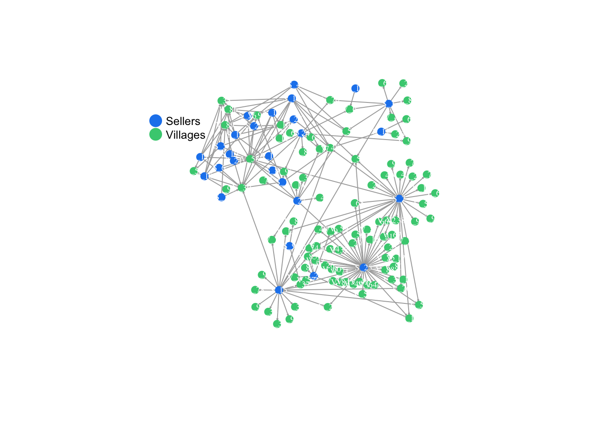
This is great, but for this project we are interested not only in trasaction links, but also in connections between villages. In this case we will add a second set of geo-spatially derived links. These links were generated by an inverse power-law model, were links were more likely between villages that were proximate, but rare connections between villages that are far away may occur. For the sake of time, we will read in the full matrix with village-to-village links already generated.
Read in new dataset that has village-to-village links and plot to see our new (more dense!) network.
FullNet <- read.csv("sweetpotato.csv", header = TRUE, row.names = 1)
FullNet2 <- as.matrix(FullNet)
FullNet3 <- graph_from_adjacency_matrix(FullNet2)
FullNet3## IGRAPH 22f51e9 DN-- 126 283 --
## + attr: name (v/c)
## + edges from 22f51e9 (vertex names):
## [1] S_1 ->V_30 S_1 ->V_48 S_1 ->V_58 S_1 ->V_95 S_1 ->V_98 S_10->V_30
## [7] S_10->V_35 S_10->V_53 S_10->V_58 S_10->V_86 S_10->V_89 S_10->V_97
## [13] S_10->V_98 S_11->V_30 S_11->V_35 S_11->V_53 S_11->V_58 S_11->V_86
## [19] S_11->V_89 S_12->V_58 S_13->V_28 S_13->V_48 S_13->V_61 S_14->V_6
## [25] S_15->V_13 S_15->V_2 S_15->V_22 S_15->V_3 S_15->V_30 S_15->V_34
## [31] S_15->V_36 S_15->V_37 S_15->V_39 S_15->V_40 S_15->V_48 S_15->V_52
## [37] S_15->V_54 S_15->V_76 S_15->V_78 S_15->V_85 S_15->V_91 S_15->V_92
## [43] S_15->V_96 S_16->V_10 S_16->V_35 S_16->V_58 S_16->V_86 S_16->V_89
## + ... omitted several edgesplot(FullNet3, edge.arrow.size=.2, vertex.size=7, vertex.label.cex=.5, vertex.label.color='white', layout= fix.layout)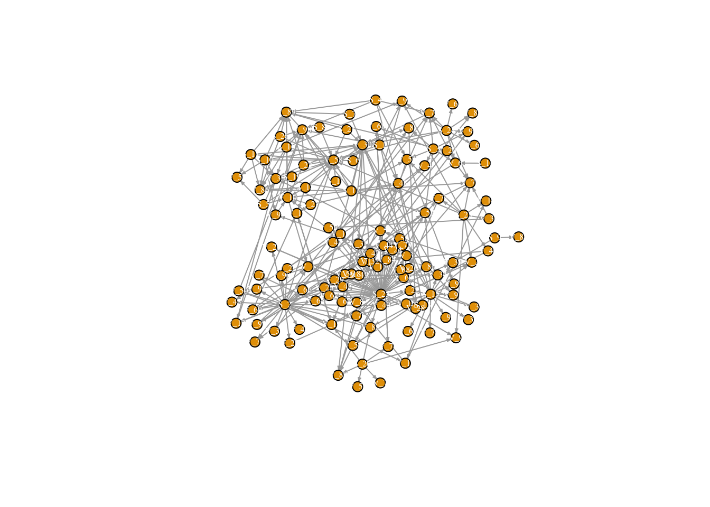
Now we can create our starting state vector. There are a number of interesting questions that we can ask. The one that we will explore here is how a single seller with infected seed can spread disease throughout the rest of the network.
To do this, we create a starting state vector that is the same size as our full network matrix (126). Each can be considered the starting infection state of the node. Our infected node in this case will be node 18.
### create a vector with the first node of 126 set to 1, rest zeros.
vec <- rep(0, 126) ## vector of 126 0s
vec[c(18)] <- 1 ## set first vector to 1. This corresponds to the first node in our node list. This will be where our infection starts.
vec## [1] 0 0 0 0 0 0 0 0 0 0 0 0 0 0 0 0 0 1 0 0 0 0 0 0 0 0 0 0 0 0 0 0 0 0 0
## [36] 0 0 0 0 0 0 0 0 0 0 0 0 0 0 0 0 0 0 0 0 0 0 0 0 0 0 0 0 0 0 0 0 0 0 0
## [71] 0 0 0 0 0 0 0 0 0 0 0 0 0 0 0 0 0 0 0 0 0 0 0 0 0 0 0 0 0 0 0 0 0 0 0
## [106] 0 0 0 0 0 0 0 0 0 0 0 0 0 0 0 0 0 0 0 0 0Next, we will begin our matrix multiplication.
nodenum <- 126 ## a placeholder object with the number of nodes in our network
nn <- nodenum*nodenum
runif(nn) < .1 ## runif() generates vector the size of our matrix filled with numbers drawn from the uniform distribution
matrix_a <- matrix(runif(nn)<.1, ncol =nodenum, nrow = nodenum) # if less than .1, put 1 into the matrix if not, 0 (no spread)
matrix_a
matrix_a <- matrix_a*1 ## From TRUE/FALSE back to 0s and 1s
matrix_a # matrix of links that will realize infection (10%)element wise multiplication - product of random matrix and adjacency matrix
matrix_c <- matrix_a * FullNet2 ## potential links reduced to 10%, simulating a 10% chance of spread
diag(matrix_c) <- 1 #keep infection in nodes that are infected by setting the diag to 1
matrix_c
Starting vector times new matrix
v_1 <- vec %*% matrix_c ## starting state vector and new matrix
v_1 ## this is our state in time 2
v_2 <- as.numeric(v_1 >0) # as numeric
v_2 # vector of transmission at Time 1 (assuming that the virus was transmitted in 5% of transactions of variety x in 2014)
## add state in time 1 and 2 to a new tibble to save results
as_tibble(vec)
as_tibble(v_2)
timestatus <- cbind(nodes, vec, v_2)
timestatus
We will keep building our table of disease progress through the network over time
#### Now time 3
matrix_d <- matrix(runif(nn)<.10, ncol =length(vec), nrow = length(vec)) ## new random matrix
matrix_d
matrix_d <- matrix_d*1
matrix_d
matrix_e <- matrix_d * FullNet2 ## again, create 1 if less than .1 (10% chance of spread)
diag(matrix_e) <- 1
matrix_e
v_3 <- v_2 %*% matrix_e ## multiply new matrix by state 2
v_3
v_3 <- as.numeric(v_3 > 0)
as_tibble(v_3)
timestatus <- cbind(nodes, vec, v_2, v_3)
timestatus
#### Time 4
matrix_f <- matrix(runif(nn)<.1, ncol =length(vec), nrow = length(vec))
matrix_f <- matrix_f * 1
matrix_f <- matrix_f * FullNet2
diag(matrix_f) <- 1
matrix_f
v_4 <- v_3 %*% matrix_f
v_4
v_4 <- as.numeric(v_4 > 0)
as_tibble(v_4)
timestatus <- cbind(nodes, vec, v_2, v_3, v_4)
timestatus <- as_tibble(timestatus)
timestatus
#### Time 5
matrix_g <- matrix(runif(nn)<.1, ncol =length(vec), nrow = length(vec))
matrix_g <- matrix_g * 1
matrix_g <- matrix_g * FullNet2
diag(matrix_g) <- 1
matrix_g
v_5 <- v_4 %*% matrix_g
v_5
v_5 <- as.numeric(v_5 > 0)
as_tibble(v_5)
timestatus <- cbind(nodes, vec, v_2, v_3, v_4, v_5)
timestatus <- as_tibble(timestatus)
timestatus
#### Time 6
matrix_h <- matrix(runif(nn)<.1, ncol =length(vec), nrow = length(vec))
matrix_h <- matrix_h * 1
matrix_h <- matrix_h * FullNet2
diag(matrix_h) <- 1
matrix_h
v_6 <- v_5 %*% matrix_h ## use the last state
v_6
v_6 <- as.numeric(v_6 > 0)
as_tibble(v_6)
timestatus <- cbind(nodes, vec, v_2, v_3, v_4, v_5, v_6)
timestatus <- as_tibble(timestatus)
timestatus
#### Time 7
matrix_i <- matrix(runif(nn)<.1, ncol =length(vec), nrow = length(vec))
matrix_i <- matrix_i * 1
matrix_i <- matrix_i * FullNet2
diag(matrix_i) <- 1
matrix_i
v_7 <- v_6 %*% matrix_i ## use the last state
v_7
v_7 <- as.numeric(v_7 > 0)
as_tibble(v_7)
timestatus <- cbind(nodes, vec, v_2, v_3, v_4, v_5, v_6, v_7)
timestatus <- as_tibble(timestatus)
timestatus
#### Time 8
matrix_j <- matrix(runif(nn)<.1, ncol =length(vec), nrow = length(vec))
matrix_j <- matrix_j * 1
matrix_j <- matrix_j * FullNet2
diag(matrix_j) <- 1
matrix_j
v_8 <- v_7 %*% matrix_j ## use the last state
v_8
v_8 <- as.numeric(v_8 > 0)
as_tibble(v_8)
timestatus <- cbind(nodes, vec, v_2, v_3, v_4, v_5, v_6, v_7, v_8)
timestatus <- as_tibble(timestatus)
timestatus
#### Time 9
matrix_k <- matrix(runif(nn)<.1, ncol =length(vec), nrow = length(vec))
matrix_k <- matrix_k * 1
matrix_k <- matrix_k * FullNet2
diag(matrix_k) <- 1
matrix_k
v_9 <- v_8 %*% matrix_k ## use the last state
v_9
v_9 <- as.numeric(v_9 > 0)
as_tibble(v_9)
timestatus <- cbind(nodes, vec, v_2, v_3, v_4, v_5, v_6, v_7, v_8, v_9)
timestatus <- as.tibble(timestatus)
timestatus
#### Time 10
matrix_l <- matrix(runif(nn)<.1, ncol =length(vec), nrow = length(vec))
matrix_l <- matrix_l * 1
matrix_l <- matrix_l * FullNet2
diag(matrix_l) <- 1
matrix_l
v_10 <- v_9 %*% matrix_l ## use the last state
v_10
v_10 <- as.numeric(v_10 > 0)
as_tibble(v_10)
timestatus <- cbind(nodes, vec, v_2, v_3, v_4, v_5, v_6, v_7, v_8, v_9, v_10)
timestatus <- as.tibble(timestatus)
timestatusGraph network over all 10 time steps and see where the infection spread!
l <- layout_with_dh(FullNet3)
V(FullNet3)$color <- ifelse(timestatus$vec == 1, "tomato", "white")
plot(FullNet3, edge.arrow.size=.2, vertex.size=7, vertex.label.cex=.4, vertex.label.color='black', layout = l)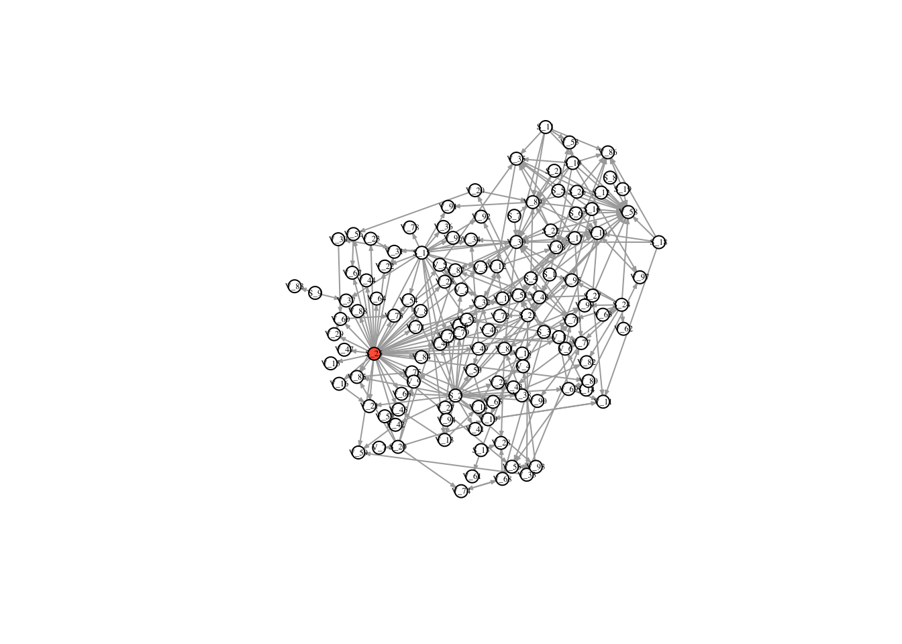
V(FullNet3)$color <- ifelse(timestatus$v_2 == 1, "tomato", "white")
plot(FullNet3, edge.arrow.size=.2, vertex.size=7, vertex.label.cex=.4, vertex.label.color='black', layout = l)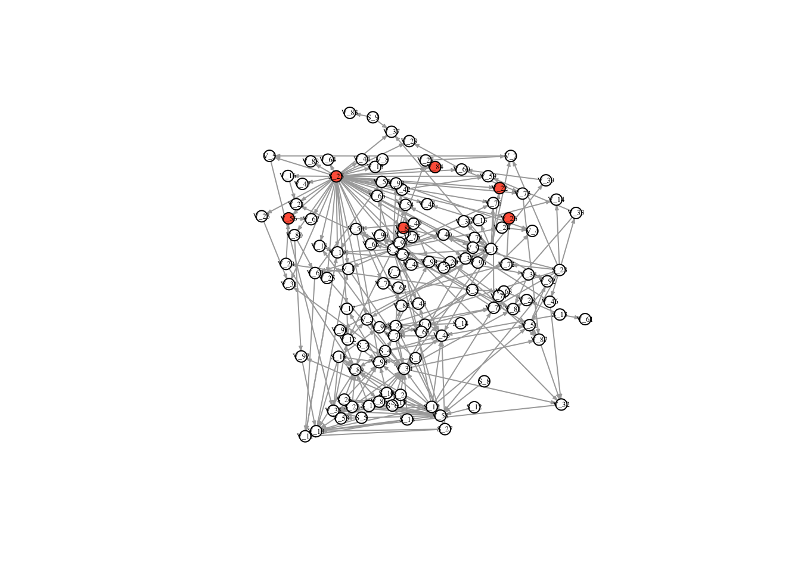
V(FullNet3)$color <- ifelse(timestatus$v_3 == 1, "tomato", "white")
plot(FullNet3, edge.arrow.size=.2, vertex.size=7, vertex.label.cex=.4, vertex.label.color='black', layout = l)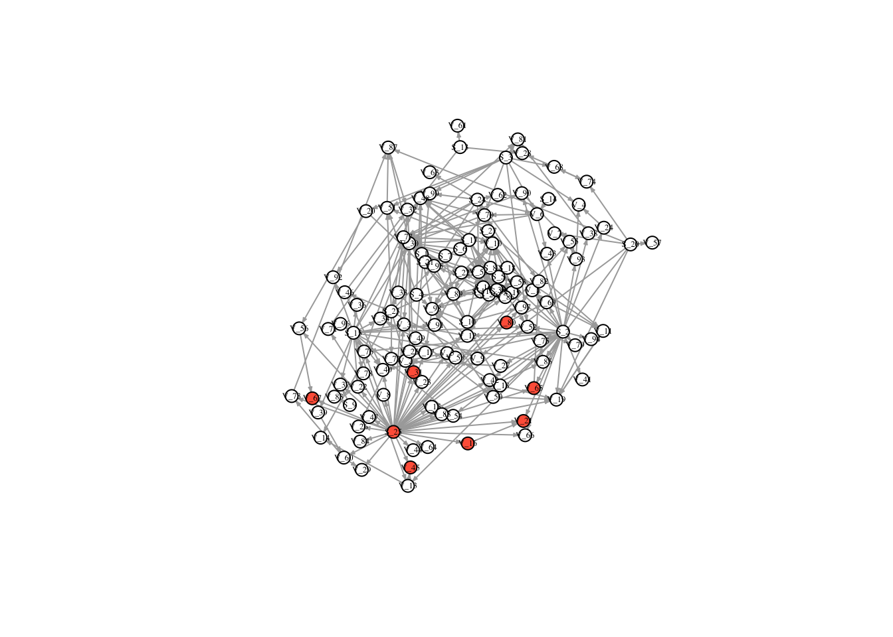
V(FullNet3)$color <- ifelse(timestatus$v_4 == 1, "tomato", "white")
plot(FullNet3, edge.arrow.size=.2, vertex.size=7, vertex.label.cex=.4, vertex.label.color='black', layout = l)
V(FullNet3)$color <- ifelse(timestatus$v_5 == 1, "tomato", "white")
plot(FullNet3, edge.arrow.size=.2, vertex.size=7, vertex.label.cex=.4, vertex.label.color='black', layout = l)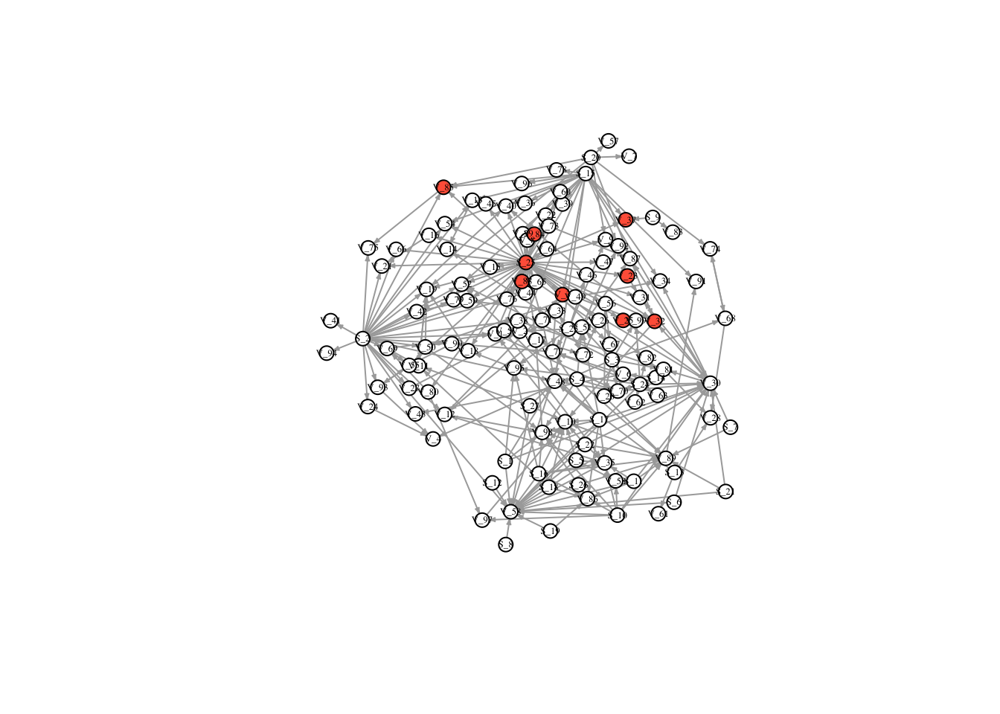
V(FullNet3)$color <- ifelse(timestatus$v_6 == 1, "tomato", "white")
plot(FullNet3, edge.arrow.size=.2, vertex.size=7, vertex.label.cex=.4, vertex.label.color='black', layout = l)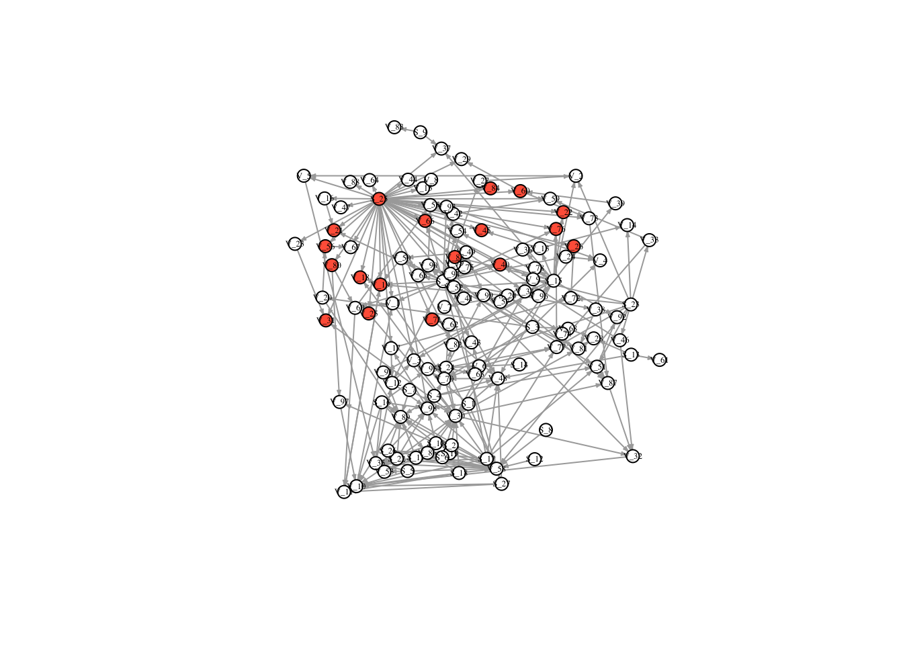
V(FullNet3)$color <- ifelse(timestatus$v_7 == 1, "tomato", "white")
plot(FullNet3, edge.arrow.size=.2, vertex.size=7, vertex.label.cex=.4, vertex.label.color='black', layout = l)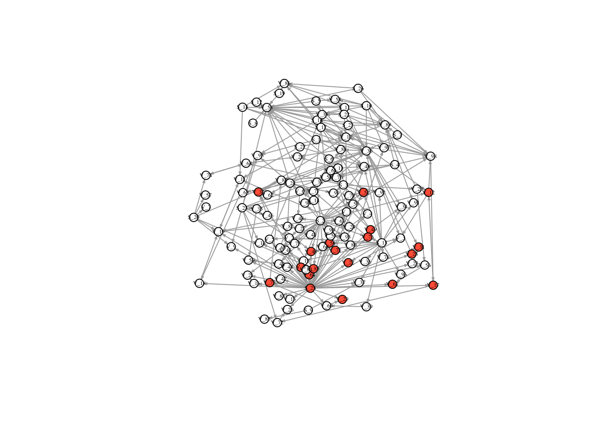
V(FullNet3)$color <- ifelse(timestatus$v_8 == 1, "tomato", "white")
plot(FullNet3, edge.arrow.size=.2, vertex.size=7, vertex.label.cex=.4, vertex.label.color='black', layout = l)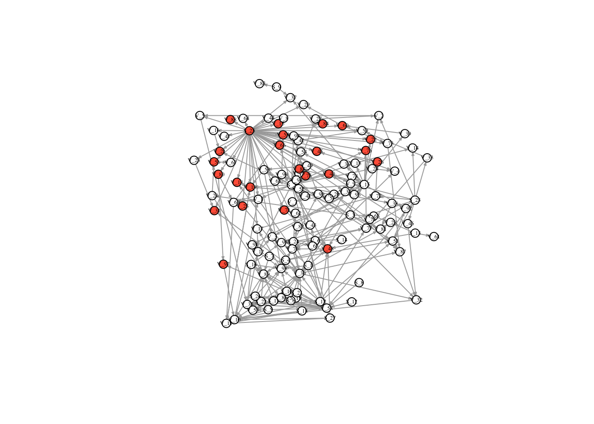
V(FullNet3)$color <- ifelse(timestatus$v_9 == 1, "tomato", "white")
plot(FullNet3, edge.arrow.size=.2, vertex.size=7, vertex.label.cex=.4, vertex.label.color='black', layout = l)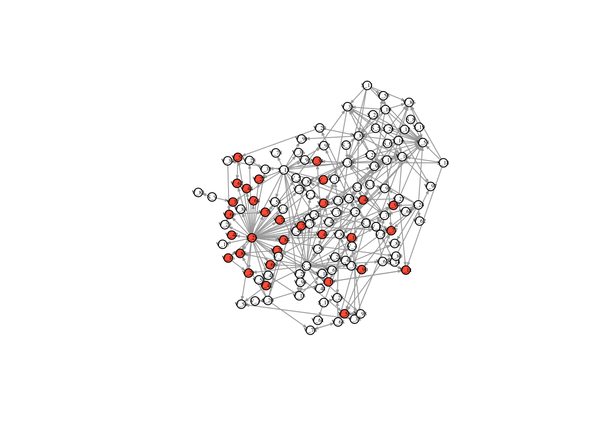
V(FullNet3)$color <- ifelse(timestatus$v_10 == 1, "tomato", "white")
plot(FullNet3, edge.arrow.size=.2, vertex.size=7, vertex.label.cex=.4, vertex.label.color='black', layout = l)Plot the number of nodes infected over time with Node 1 as starting node
timestatus1 <- timestatus %>%
gather('vec', 'v_2', 'v_3', 'v_4', 'v_5', 'v_6', 'v_7', 'v_8', 'v_9', 'v_10', key = "Timestep", value = "Status" )
head(timestatus1) ## clean up data so status is not in columns## # A tibble: 6 x 4
## node Type Timestep Status
## <fct> <fct> <chr> <dbl>
## 1 S_1 Buyer vec 0.
## 2 S_10 Buyer vec 0.
## 3 S_11 Buyer vec 0.
## 4 S_12 Buyer vec 0.
## 5 S_13 Buyer vec 0.
## 6 S_14 Buyer vec 0.## sum the number of nodes infected at each time point
times1 <- timestatus1 %>%
group_by(Timestep) %>%
summarise(
Number_of_Nodes = sum(Status, na.rm = TRUE)
)
## plot number of nodes over 10 time steps
ggplot(data = times1, mapping = aes(reorder(Timestep, Number_of_Nodes), y = Number_of_Nodes)) +
geom_point()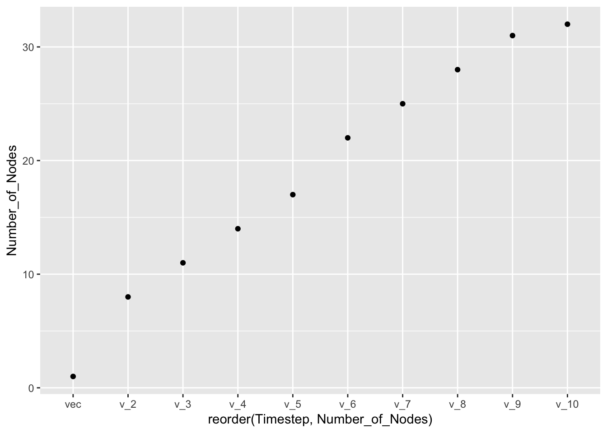
But what if we want to run this over many simulations? We can’t keep repeating the same code! Use this function:
DiseaseSpreadFUN <- function(k, startnode, nodenum, p){
nn <- nodenum*nodenum
k <- as.matrix(k)
diag(k) <-1
vec <- rep(0, nodenum)
vec[c(startnode)] <- 1
NodesNew <- rep(1:126,20*100) # make a dataframe large enough for 20 times steps, 100 simulations
Vec <- matrix(rep(vec,22),22,byrow = T) #vector of infection states after each time step
Status <- NULL
Step <- NULL
Sim <- NULL
for(j in 1:100){ ## number of simulations
Sim <- c(Sim,rep(j,nodenum*20)) ## number of time steps
for(i in 1:20){
MatrixRun <- matrix(runif(nn)< p, ncol =length(vec), nrow = length(vec))
MatrixRun <- MatrixRun*1
MatrixRun <- MatrixRun*k
MatrixRun[c(1:17, 19:27),c(1:17, 19:27)] <- 0 ## if we want to keep the infection from spreading to other sellers, we need to set them to 0
diag(MatrixRun) <- 1
Vec[i+1,] <- Vec[i,] %*% MatrixRun
Vec[i+1,] <- as.numeric(Vec[i+1,] > 0)
Status <- c(Status ,Vec[i+1,])
Step <- c(Step, rep(i, 126))
}
}
temp <- cbind(NodesNew,Sim, Step, Status)
temp <- as.tibble(temp)
out <- temp %>%
group_by(Sim, Step) %>%
summarise(Number_of_Nodes = sum(Status))
return(out)
}Run new function and review output
A <- DiseaseSpreadFUN(FullNet2, 18, 126, .1)
A## # A tibble: 2,000 x 3
## # Groups: Sim [?]
## Sim Step Number_of_Nodes
## <dbl> <dbl> <dbl>
## 1 1. 1. 6.
## 2 1. 2. 8.
## 3 1. 3. 9.
## 4 1. 4. 11.
## 5 1. 5. 16.
## 6 1. 6. 20.
## 7 1. 7. 26.
## 8 1. 8. 32.
## 9 1. 9. 34.
## 10 1. 10. 37.
## # ... with 1,990 more rowsPlot!
library(ggplot2) ## I choose to use ggplot here
p <- ggplot(data = A, mapping = (aes(x = Step, y = Number_of_Nodes))) +
ylim(0, 100) +
geom_jitter(color = "gray70") +
geom_smooth(se = FALSE) +
theme_classic(base_size = 24) +
xlab("Timestep") +
ylab("Number of Nodes Infected") +
scale_x_continuous(breaks = c(1, 2, 3, 4, 5, 6, 7, 8, 9, 10, 11, 12, 13, 14, 15, 16, 17, 18, 19, 20),
label = c(1, 2, 3, 4, 5, 6, 7, 8, 9, 10, 11, 12, 13, 14, 15, 16, 17, 18, 19, 20))
p## `geom_smooth()` using method = 'gam' and formula 'y ~ s(x, bs = "cs")'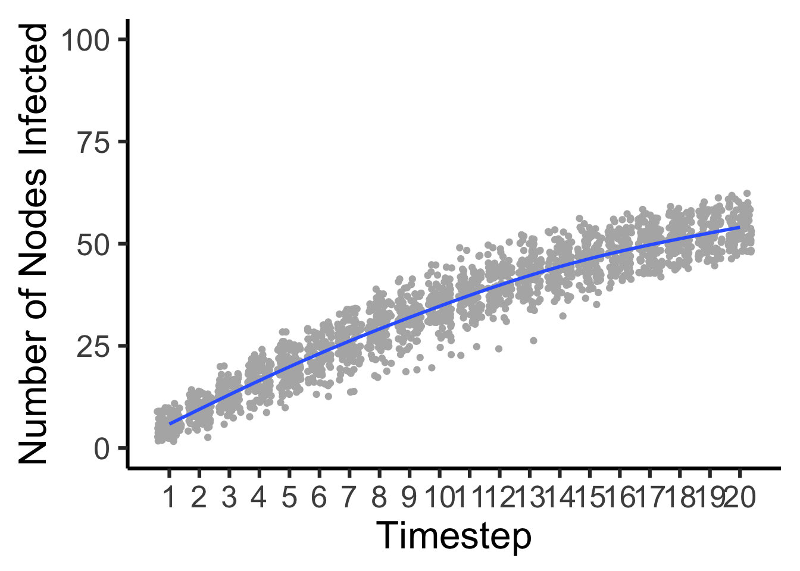